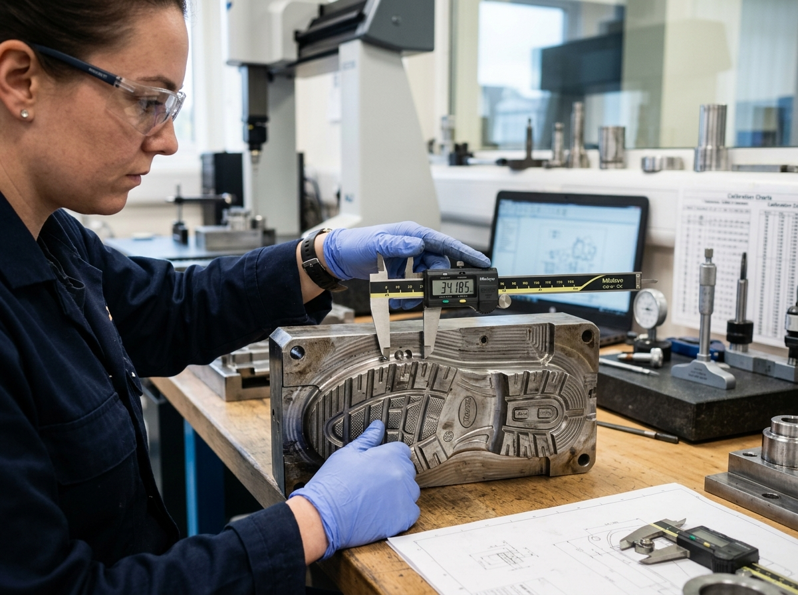

Transparent manufacturing compliance, GST documentation, and 4-point dimensional quality checks.
Whizz Moulds operates as a fully registered manufacturing proprietorship in Kanpur, Uttar Pradesh. We maintain transparent tax compliance and provide GST tax invoices for all B2B factory orders.
| GST Status | GST Registered (Active since 2019) |
|---|---|
| Business Name | Whizz Moulds |
| Proprietorship | Proprietor H. Verma |
| Registered Location | Kanpur Industrial Zone, Uttar Pradesh, India |
| Tax Invoicing | B2B Tax Invoice provided for every order |

Every mould set undergoes rigorous shop-floor inspection prior to dispatch to prevent production downtime at client shoe plants.
Verification of raw metal blocks — auditing chemical alloy density, hardness, and thermal expansion specs for aluminium, stainless steel, and mild steel.
Micrometer and digital vernier caliper measurements against CAD blueprints to confirm sole thickness, shoe size grading, and tread groove depths.
In-house test pouring (PU / TPR / Rubber) to evaluate chemical expansion, air venting efficiency, and ease of sole ejection.
Surface polish inspection to ensure zero flash lines, perfectly mated parting surfaces, and smooth ejector pin movement.
At Whizz Moulds, we believe in honest B2B communication. Our GST registration certificate, MSME business registration, and bank verification documents are available upon request during contract finalization.
Client footwear factories may request scan copies of our official GST registration and tax clearance certificates directly via WhatsApp or email prior to initiating bulk tooling orders.